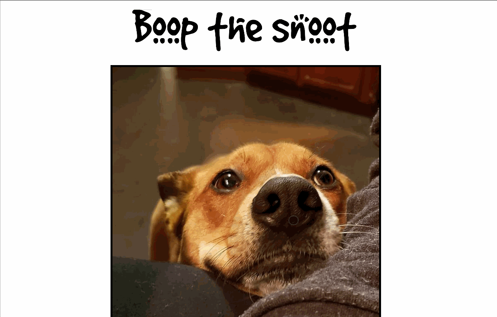

Boop Snoot
A delightful app that places a "snoot" on any part of the page that you "boop"
A delightful app that places a "snoot" on any part of the page that you "boop"
Arduino Nano gadget that tracks three coffee pots and updates a colorful LCD every few seconds.

Turns a NeoPixel ring into a clock with playful animations driven by an Arduino.
 LED layout preview
LED layout preview
Previewer and editor for 16x96 LED panel animations using a reverse engineered vendor format.
Internet-controlled treat dispenser built with Blynk and a servo so you can reward pups from your phone.

Convert IR remote signals into keyboard events with a Pro Micro or Leonardo so TV remotes can steer USB devices.